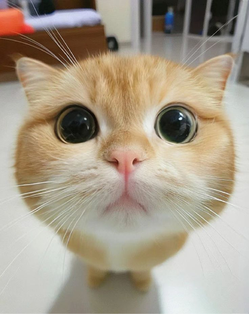
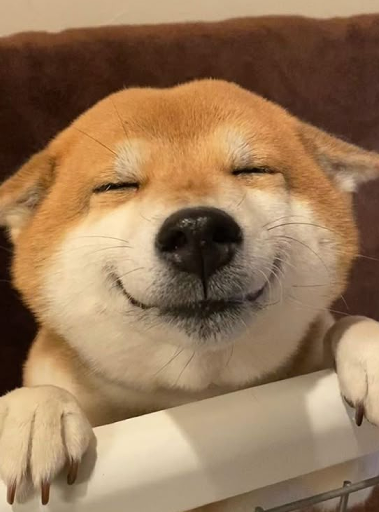
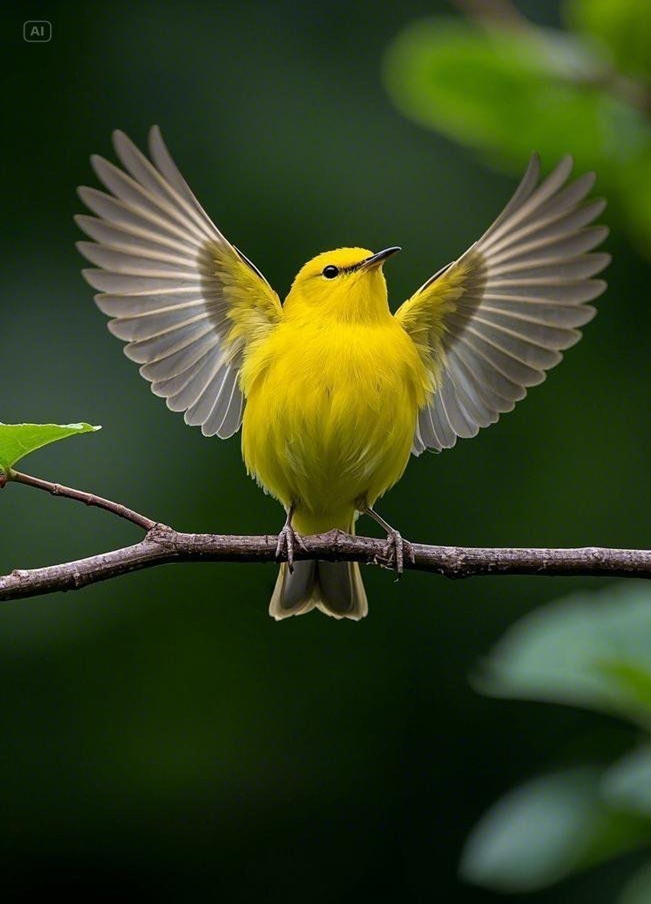
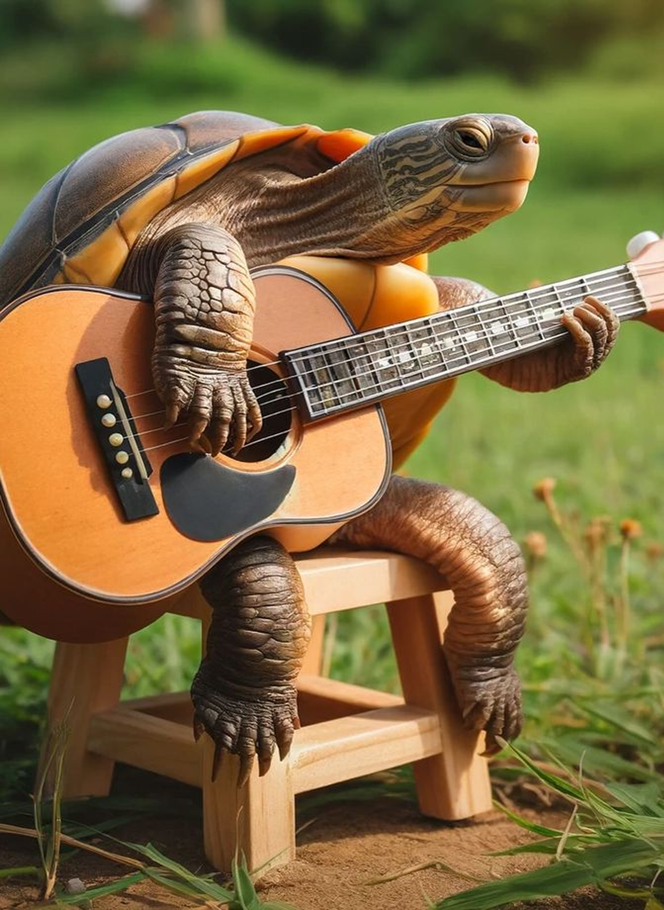

Berbulu panjang dan jinak. Cocok untuk peliharaan di dalam rumah. Suka tidur dan manja pada pemiliknya.
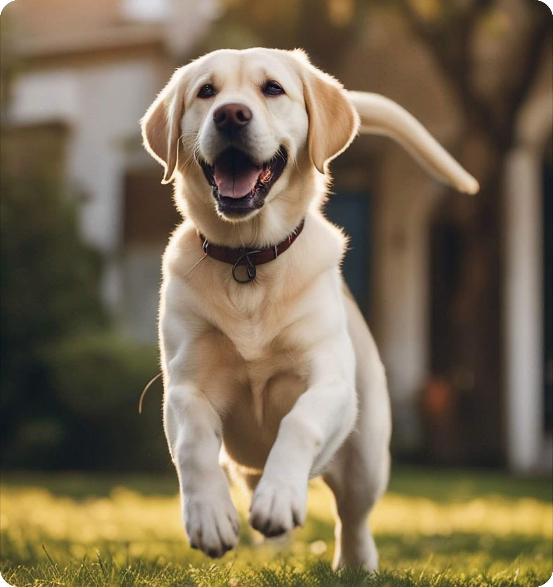
Aktif dan ramah. Seringkali digunakan sebagai anjing pendamping atau pencari.
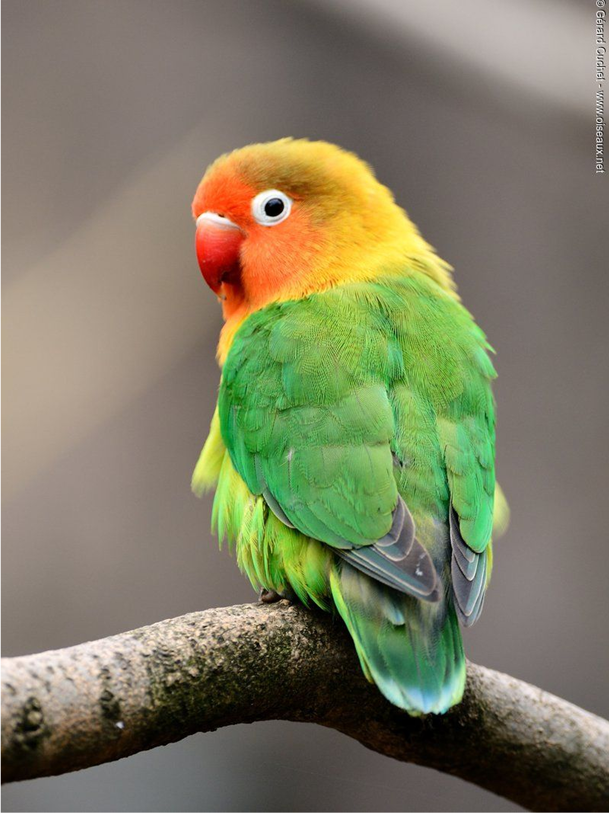
Berwarna-warni dan suka bersosialisasi. Suara kicauannya nyaring, cocok sebagai burung hias.
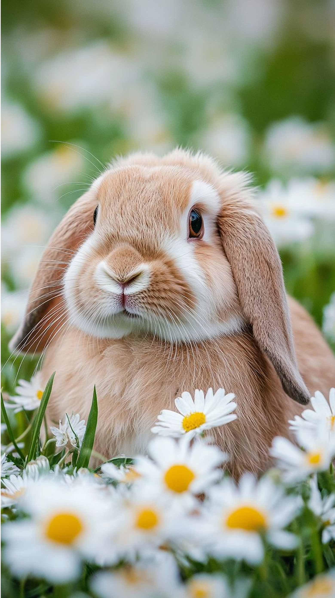
Telinga panjang terkulai dan sangat menggemaskan. Kecil, tenang dan suka didekati.
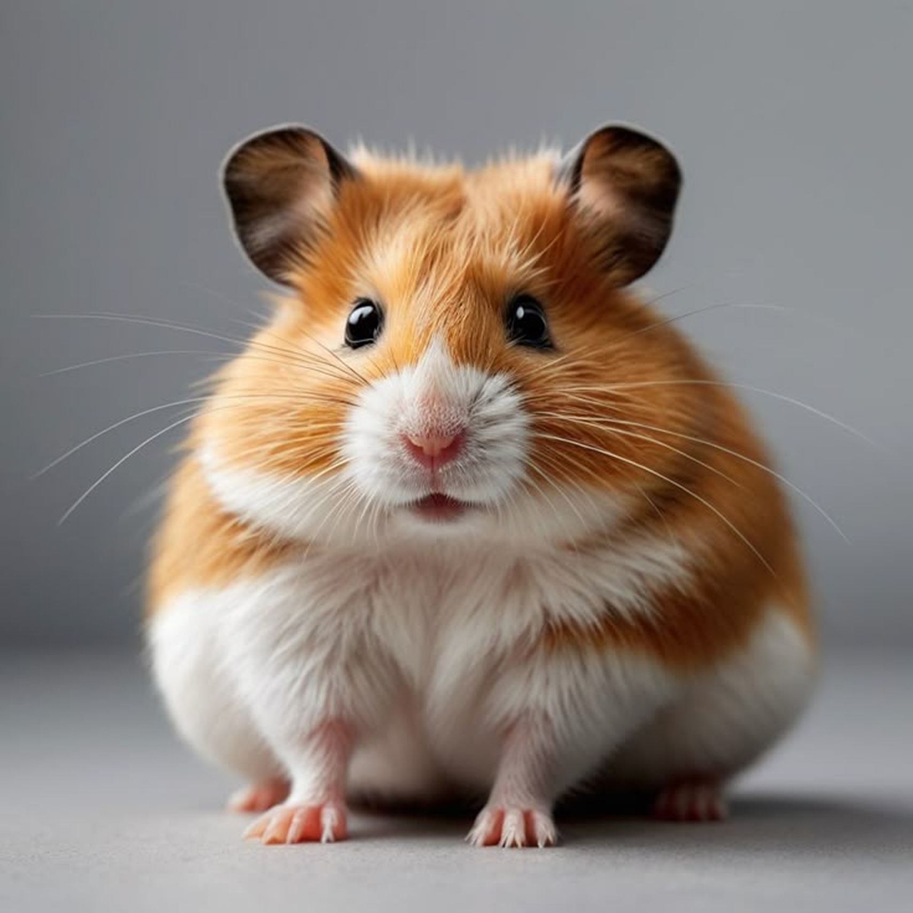
Kecil, aktif, dan mudah dirawat. Cocok sebagai hewan peliharaan pertama. Suka berlari di roda.

Cerdas luar biasa dan setia. Cocok untuk yang punya gaya hidup aktif dan suka melatih.

Berwajah keriput dan bertubuh kekar. Tenang dan sangat setia pada pemiliknya.
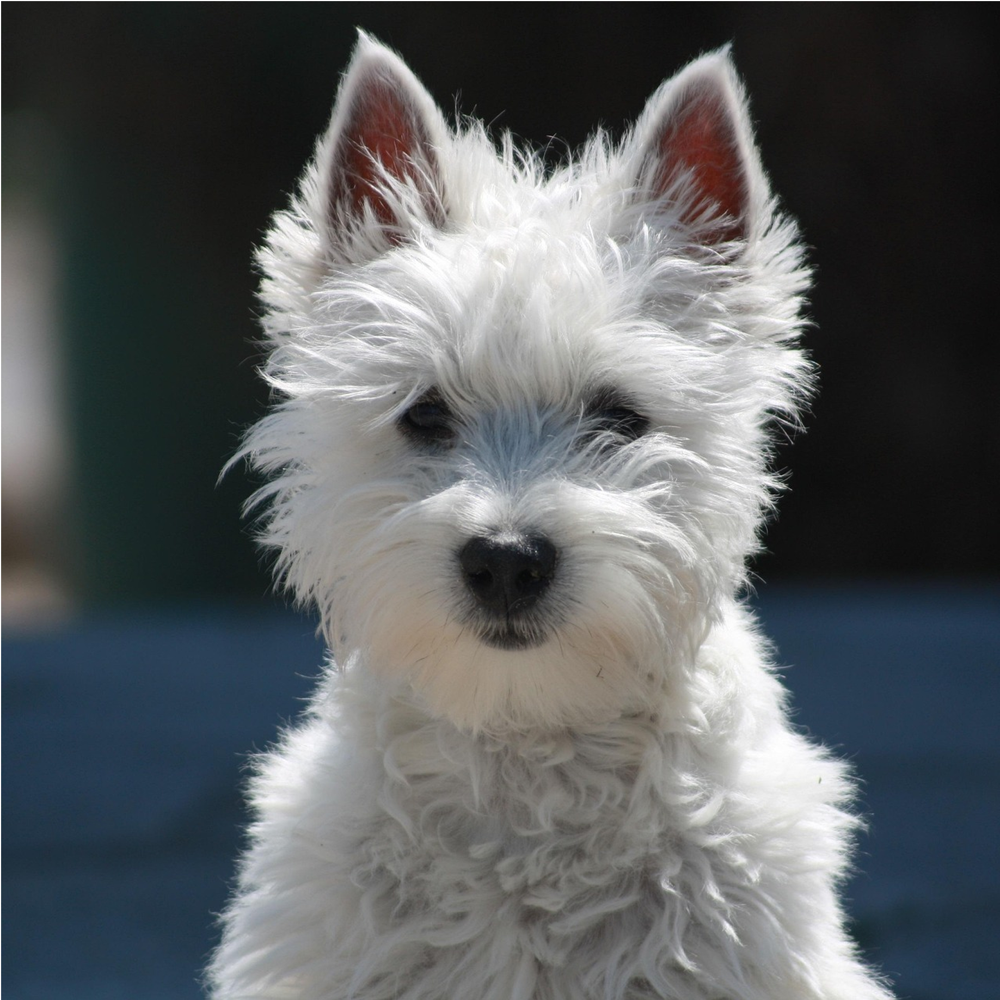
Banyak variasi, aktif dan penuh semangat. Jenis campuran terrier banyak tersedia di shelter.

Salah satu anjing terkecil di dunia. Pemberani, setia, dan penuh semangat meskipun kecil.
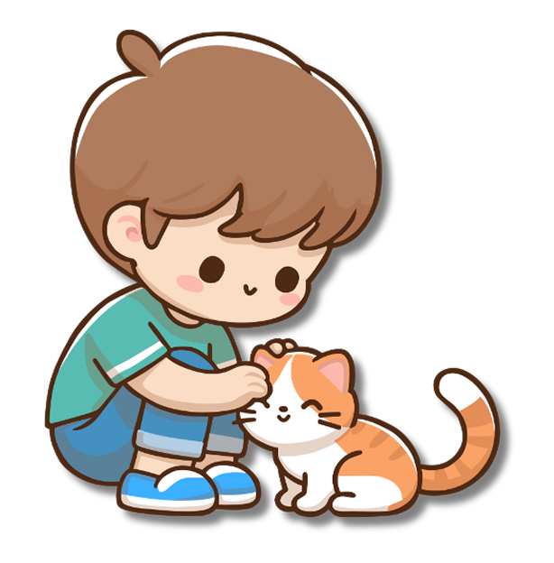
Pastikan hewan peliharaan Anda mendapatkan perhatian dan interaksi yang cukup setiap hari.
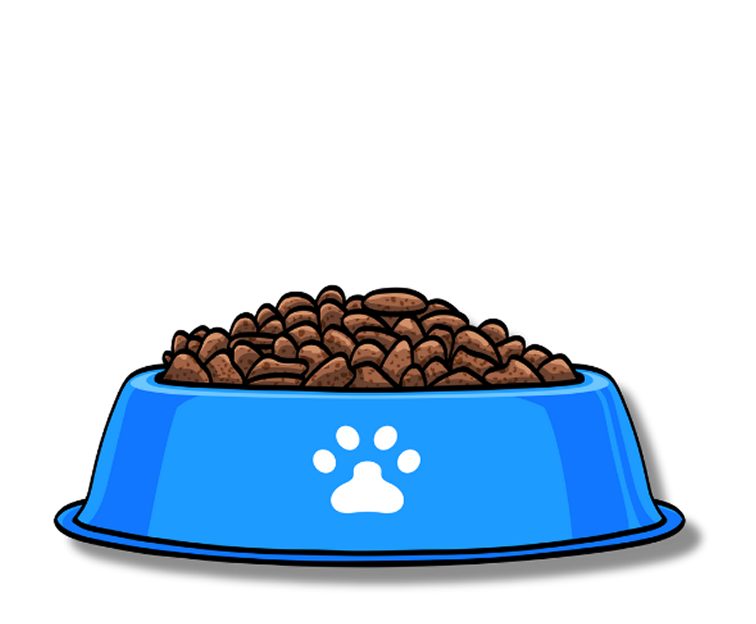
Nutrisi yang tepat adalah kunci kesehatan. Sediakan selalu air bersih yang segar.
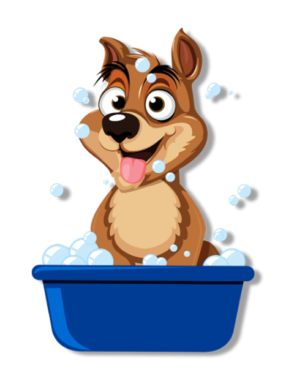
Grooming teratur dan kunjungan rutin ke dokter hewan mencegah masalah kesehatan.

Berpengalaman lebih dari 5 tahun di klinik hewan kecil.

Alumni Universitas Udayana, aktif dalam program reintroduksi satwa endemik.

Praktisi hewan kecil dan penggiat edukasi serta kucing ras.

Spesialis penanganan penyakit dalam pada anjing & kucing.

Pengalaman klinis + edukator publik tentang kesehatan reproduksi hewan.

Berpengalaman dalam pengobatan klinik hewan dan ahli bedah minor.